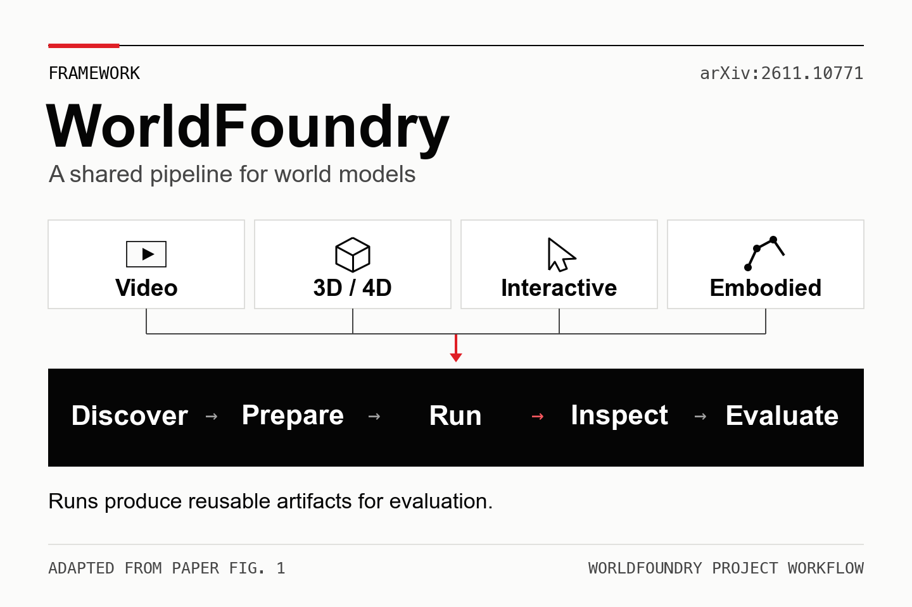
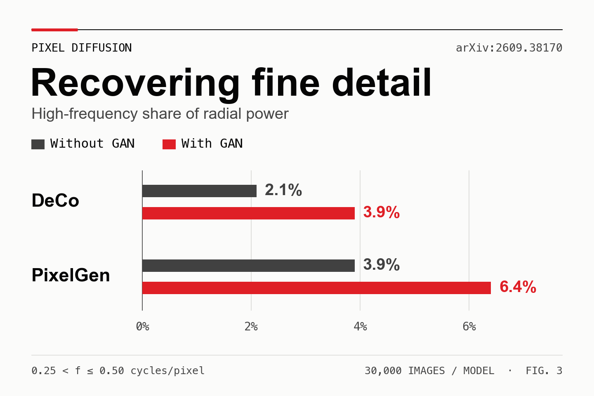

WorldFoundry: Towards Unified Infrastructure for World Intelligence
Open-source infrastructure for running and evaluating world models reproducibly across video, 3D and 4D, embodied action, and interactive environments.

Publications
A curated record of OpenEnvision research, linking papers with resources for reproduction and reuse.
Open-source infrastructure for running and evaluating world models reproducibly across video, 3D and 4D, embodied action, and interactive environments.

During post-training, the authors add a GAN loss to the predicted clean RGB image at timesteps below a noise cutoff. On DeCo and PixelGen, this restores high-frequency detail and improves fidelity, diversity, and alignment with text prompts.

World Model · arXiv:2611.10771